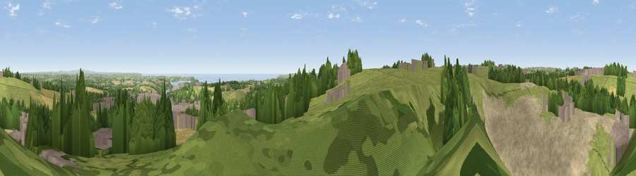

Viewpoint near Mabe Burnthouse
#10516 in England · top 21% of its area beats it · near Mabe BurnthouseWhere it is
The exact computed spot (SW 75975 34325). Click the marker for map links.
The view, rendered

A 360° render of this exact spot computed from the terrain model, tree cover and land cover — summer colours, afternoon light, calibrated against photographs of famous viewpoints. Real trees, hedges and buildings will differ in detail.
The panorama
Grey silhouette: terrain skyline in each direction (720 bearings, Earth curvature and refraction included). Dashed green: skyline with trees (+15 m) and buildings (+8 m) as obstacles. Blue strip: how far the ground is visible on each bearing.
Where the view opens
Wedge length = distance to the farthest visible ground on that bearing (vegetation-aware). Rings at 10, 25 and 50 km.
What fills the view
37% grassland · 22% bare ground · 18% woodland · 12% built-up · 5% cropland · 5% water
Angular shares of the visible panorama (visual magnitude), not map area. Landscape diversity 0.69 (0–1 Shannon).
Key numbers
More beautiful places nearby
The staircase of upgrades: each row has a higher view potential than everything closer. Driving times are estimates from straight-line distance, calibrated against real road routing — check an actual route before setting out.
| Place | Direction | Drive | Score |
|---|---|---|---|
| Viewpoint near Mabe Burnthouse | S · 1 km | ~2 min | 71.9 |
| Viewpoint near Lanner | NW · 8 km | ~16 min | 74.5 |
| Carn Brea | NW · 10 km | ~19 min | 81.1 |
| Viewpoint near Ashton | WSW · 16 km | ~29 min | 81.3 |
| Tregonning Hill | WSW · 17 km | ~29 min | 83.0 |
| St Agnes Beacon | NNW · 17 km | ~29 min | 86.1 |
| Rosewall Hill | W · 28 km | ~44 min | 88.0 |
| Viewpoint near Combe Martin | NE · 141 km | ~164 min | 88.9 |
50.16653, -5.13830 · source: screening · position refined by local search. Computed location — check access rights before visiting.